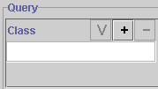
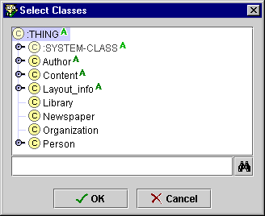
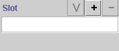
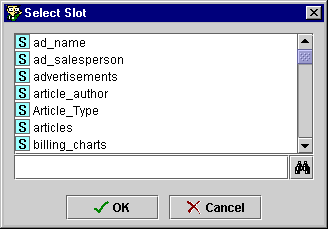

Creating a
Simple Query
Creating a
Simple Query

The Queries Tab allows you to query your project and locate all instances
that match the criteria you specify. You can create a simple query, or
combine multiple criteria to restrict or expand your results.
You can create a simple query in one of three ways:
- You can specify a class, select one of the
slots attached to the class, and then specify criteria based on the slot type.
Running the query will find the instances that
match your criteria.
-
You can create a query based solely on a slot, without selecting a class.
Running the query will find the instances that
match your criteria.
- You can create a query based solely on a class, without selecting a slot
or any criteria. Running the query will find all instances of the selected
class and all of its subclasses.
To create a simple query:
- If you know the class you wish to specify, click the Select Class
 button above the Class entry bar. (If you wish to create a query based
solely on a slot, start at Step 3.)
button above the Class entry bar. (If you wish to create a query based
solely on a slot, start at Step 3.)

- Select the class you want from the Select Classes dialog box, then click OK.
(If you wish to create a query solely on that class, you are now ready to run
it.)

The class is now displayed in the Class entry bar.
- Click the Select Slot
button above the Slot entry bar.

- Select a slot from the Select Slot dialog box. If you selected a class,
only slots attached to that class are shown. If no class is selected, all
slots are available. Click OK

- Make a selection from the pull-down criteria menu. This menu becomes
active after you select a slot or a class; the choices are based on the slot's Value
Type.
- Enter a value for comparison at the entry bar to the right. The entry
method for this value depends on the slot value type.
Note: As mentioned above, you can create a query based solely on a slot; to
do this, skip Steps 1 and 2. You can also select the slot first and then the
class; this is useful if you remember the slot name, but are not certain of the
classes that it is attached to. To do this, select the slot as in Steps 3 and 4,
then select as class as in Steps 1 and 2. In this case, the Select Classes
dialog box will show only those classes that have the selected slot.
Next: Creating a Complex Query
Queries Table of Contents